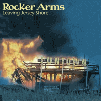

Rocker Arms - Leaving Jersey Shore (MiniAlbum, 2018)
01 - Joey (2:05)
02 - Closer to Me (1:35)
03 - Free Beer 4 All (2:18)
04 - Don't Tell Me (2:03)
05 - Dressed in Red (2:33)
06 - Punk No. 1 (1:26)
07 - 28 (1:41)
© Rocker Arms :: [Digital]
Notes
Amersfoort, Holland.
Jef van Breda - Vocals, Guitar
Hedzer Gelijsteen - Doublebass, Backing vocals
Thijs Lindhout - Drums, Backing vocals
reference information: Facebook page
Review
071/366 (Project 366)
Decided to make this week a bit Punkabilly, Modern Rockabilly and Psychobilly flavoured one. So, this band - Rocker Arms - are Rock'n'Roll with influence by Punk sound, mad, psycho and crazy themes. As a result, their sound is diverse from release to release, from song to song - but, in general, possible to call it as Punkabilly, modern Rockabilly with soft psychopop around. Some of their albums are full of buzzin' drive, trashy force and rockin' roll. Practically always there are might of general Rock, a moody Rockabilly tone and garage Psychobilly craze.
MiniAlbum "Leaving Jersey Shore" begins with a fancy story about "Joey". And even featured quite hardcore song "Don't Tell Me".